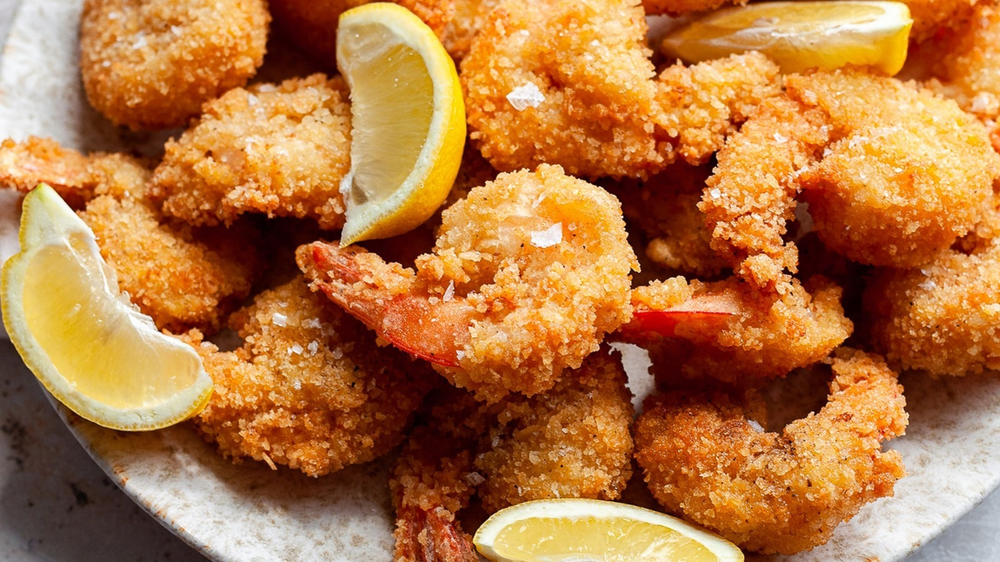

Crunchy Fried Shrimp

Descripiton
These fried shrimp are jumbo shrimp coated in seasoned breadcrumbs, then deep fried to golden brown perfection. The perfect main course or appetizer option that's even better than what you'd get at a restaurant!
Ingredients:
- 1/3 cup all-purpose flour
- 3/4 teaspoon salt
- 1/2 teaspoon ground black pepper
- 3 large eggs
- 1 1/2 cups Kikkoman Panko Bread Crumbs
- 1 pound uncooked jumbo shrimp, peeled and deveined, tails left intact
- 1 cup vegetable oil for frying, or as needed
Steps
- Mix flour, salt, and pepper in a medium bowl. Beat eggs in a second medium bowl until frothy. Place bread crumbs in a third bowl.
- Dredge shrimp in the flour mixture, then shake off excess. Dip shrimp into beaten eggs, then press shrimp into bread crumbs, turning to coat both sides.
- Heat 2 inches oil in a large, heavy pot to 350 degrees F (175 degrees C).
- Deep-fry shrimp in batches in the hot oil until cooked through, about 1 minute. Use tongs to transfer shrimp to a paper towel-lined plate to drain. Repeat to cook remaining shrimp.
- Arrange shrimp on a platter to serve.
Buon Appetito :)
GO TO TOP
GO BACK TO MAIN PAGE